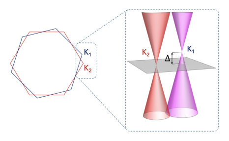
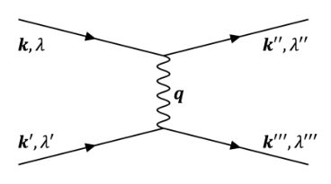

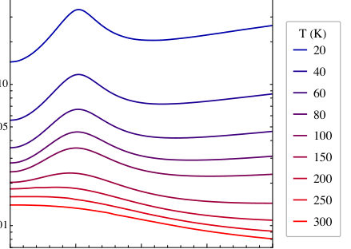
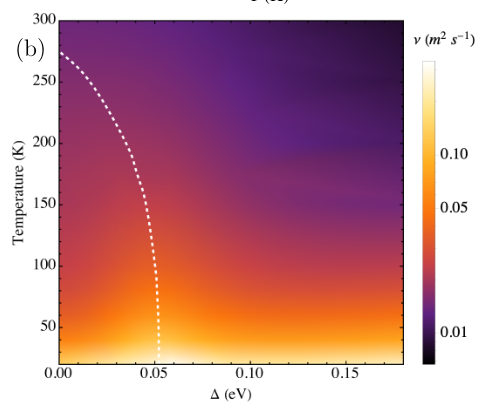
← Index · ← Previous · Next →
Authors: Edgar Knobloch, Arik Yochelis
Type: theory · Category: statistical mechanics · PDF: https://arxiv.org/pdf/2605.11878v1
Analysis basis: full PDF text, analyzed in chunks
Topic relevance: driven-dissipative phase transition 2/5 · non-equilibrium dynamics 2/5 · non-equilibrium universality 2/5
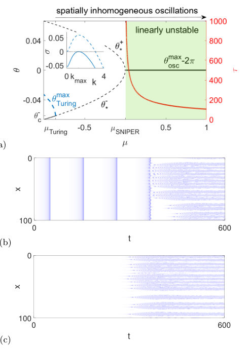
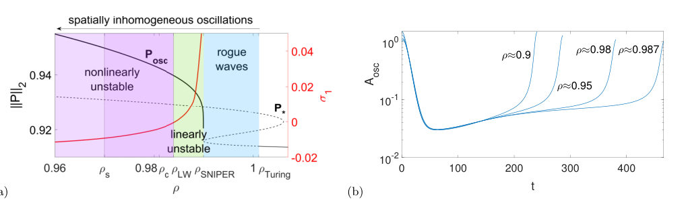
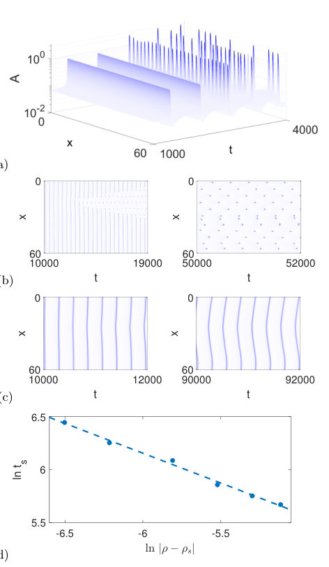
Summary. This paper explains how spatially modulated oscillations, such as chimera states and chaotic spiking, arise near SNIPER bifurcations due to an interaction with Turing instabilities. It provides a general framework for understanding complex pattern formation in reaction-diffusion systems. This is significant for predicting dynamics in biological, chemical, and optical systems.
Why it may be interesting. The findings regarding the interplay between bifurcation-induced oscillations and Turing instabilities are highly relevant to understanding non-equilibrium phase transitions and pattern formation in open quantum systems and nonlinear optics.
Main problem. The study investigates the emergence and stability of spatially non-uniform (modulated) relaxation oscillations near SNIPER (Saddle-Node Infinite Period) bifurcations in spatially extended media.
Main result. The authors demonstrate that a long-wavelength instability, driven by the imprinting of a nearby Turing instability onto uniform oscillations, leads to complex dynamics such as chimera states and chaotic spiking.
Method. The researchers use linear stability analysis (Floquet theory), numerical continuation via AUTO, and direct numerical simulations (DNS) of reaction-diffusion equations.
Model / system. The study utilizes reaction-diffusion models, specifically a phase-based theta-reaction-diffusion model for neuronal excitability and the Meinhardt activator-inhibitor-substrate model.
Key observables. Floquet multipliers/exponents, wave number (k), dispersion relations, and space-time plots of field amplitudes.
Important parameters / regimes. Control parameters driving the SNIPER and Turing bifurcations (mu and rho), and the wavelength of perturbations.
Assumptions / limitations. The analysis assumes spatially extended media and utilizes a frozen-time approximation to estimate stability near the SNIPER onset.
Figures summary. Figures include bifurcation diagrams showing steady and periodic solutions, dispersion relations for Floquet multipliers, and space-time plots illustrating the transition to chimera states and chaotic spiking.
Paper structure. The paper introduces the SNIPER bifurcation, presents stability analysis for the theta model and Meinhardt model, details the mechanism of long-wavelength instability, and concludes with numerical validation of pattern formation.
Properties of spatially dependent relaxation oscillations near a SNIPER bifurcation are described. A SNIPER bifurcation creates a large-amplitude long-period periodic orbit via the annihilation of a pair of fixed points in a saddle-node bifurcation. We show that in spatially extended media, this orbit may undergo a long-wavelength instability, leading to spatially modulated oscillations that persist on both sides of the SNIPER. The oscillations take different forms depending on the system: a chimera state in a theta-reaction-diffusion model, and chaotic spiking in an activator-inhibitor-substrate model. The results are expected to have applications in a number of physical systems exhibiting SNIPER bifurcations, ranging from models of the nervous system through chemical reactions to nonlinear optics.
Authors: Alexey Ermakov, Alessandro Principi
Type: theory · Category: strongly correlated electrons · PDF: https://arxiv.org/pdf/2605.11069v1
Analysis basis: full PDF text, analyzed in chunks
Topic relevance: Keldysh / 2PI / non-Gaussian methods 2/5 · non-equilibrium dynamics 2/5




Summary. This paper demonstrates that the viscosity of 2D Dirac fluids can be controlled via valley imbalance, showing a unique nonmonotonic response to energy splitting. By comparing different band structures, the authors clarify how the temperature dependence of inertial mass density distinguishes Dirac fluids from conventional 2D electron gases.
Why it may be interesting. The study of hydrodynamic transport and viscosity in Dirac fluids provides deep insights into many-body dynamics and the interplay between band structure and scattering phase space, which is relevant to understanding non-equilibrium transport in many-body systems.
Main problem. The paper investigates how valley imbalance (an energy offset between Dirac cones) affects the viscosity of two-dimensional Dirac fluids, specifically in systems like small-angle twisted bilayer graphene.
Main result. The viscosity exhibits a strongly nonmonotonic dependence on valley splitting, featuring a maximum when a valley approaches charge neutrality and a minimum when electron-hole scattering is enabled. In contrast, monolayer graphene shows monotonic kinematic viscosity, and 2DEG shows a minimum in both shear and kinematic viscosity.
Method. The authors use a linearized semiclassical Boltzmann approach focusing on momentum-conserving electron-electron scattering with dynamically screened Coulomb interactions.
Model / system. The primary model is an effective two-cone Dirac system with an energy offset Delta between valleys, motivated by small-angle twisted bilayer graphene. Comparison models include monolayer graphene (MLG) and a parabolic-band 2D electron gas (2DEG).
Key observables. Shear viscosity (eta), kinematic viscosity (nu), viscosity transport time (tau_v), Drude weight (D), and nonlocal resistance profiles.
Important parameters / regimes. Valley splitting (Delta), temperature (T), carrier density (n), chemical potential (mu), and the crossover between degenerate Fermi-liquid and nondegenerate Fermi-gas regimes.
Assumptions / limitations. Assumes no intervalley scattering, incompressible flow, and that Umklapp processes, phonons, and static disorder are subdominant. It also assumes the separation between valley centers is large enough to neglect inter-valley wavefunction overlap.
Figures summary. Figure 1 shows a schematic of the valley-polarized two-cone problem; Figure 2 illustrates the two-body scattering process; Figure 5(a) plots MLG shear viscosity vs temperature; Figure 8 shows shear viscosity vs valley splitting; Figure 9 compares numerical and analytical estimates for the local minimum line.
Paper structure. The paper introduces the problem of valley-imbalanced Dirac fluids, develops a kinetic framework using the Boltzmann equation, analyzes the nonmonotonic viscosity response in the two-cone model, provides comparative studies for MLG and 2DEG, and includes an appendix with detailed mathematical derivations of the relaxation rate.
Motivated by recent experiments in weakly hybridized small-angle twisted bilayer graphene, we investigate how valley imbalance affects the viscosity of two-dimensional Dirac fluids. We show that shifting the two low-energy Dirac cones relative to one another provides a direct knob to control the viscosity of the electron fluid. As the splitting is increased, the system passes through distinct transport regimes associated with valley depletion, charge-neutrality crossover, and the onset of electron-hole scattering, producing a pronounced nonmonotonic response. To place this result in context, we also analyze the viscosity in monolayer graphene (MLG) and two-dimensional electron gas (2DEG). We show that, due to the strong dependence of its inertial mass density on temperature, the kinematic viscosity of MLG is a monotonically decreasing function of temperature. Our results identify valley control as a route to tuning hydrodynamic transport in Dirac materials and clarify the interplay between band structure, scattering phase space, and screening in setting the viscous response.
Authors: A. N. Afanasiev, P. S. Alekseev
Type: theory · Category: other · PDF: https://arxiv.org/pdf/2605.12150v1
Analysis basis: full PDF text, analyzed in chunks
Topic relevance: non-equilibrium dynamics 2/5
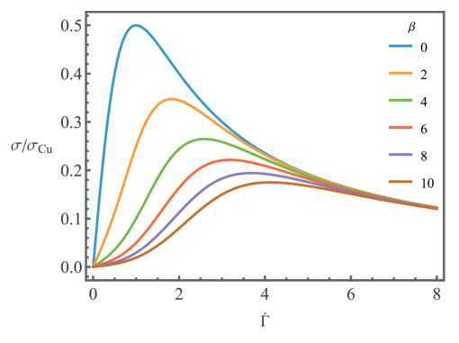
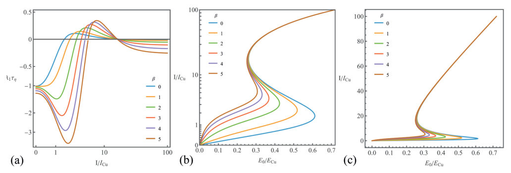
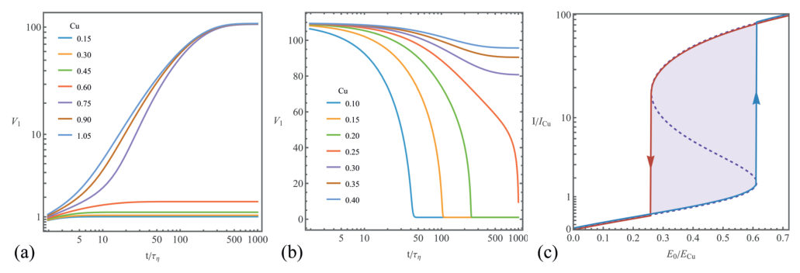
Summary. This paper explores how non-Newtonian viscosity in 2D electron fluids, driven by local heating, leads to complex transport phenomena. It demonstrates that these fluids can exhibit bistable flow states and S-shaped current-voltage curves, which could be used to create electronic switches.
Why it may be interesting. not directly relevant
Main problem. Investigation of flow bistability and non-linear transport in 2D electron fluids characterized by non-Newtonian viscosity due to local electron heating.
Main result. The study predicts the emergence of S-shaped current-voltage characteristics, the coexistence of two stable steady-state flow configurations, and the occurrence of current switching and hysteresis.
Method. The authors derive a simplified non-linear hydrodynamic equation from the Navier-Stokes equations and use a functional series expansion truncated to the fundamental spatial harmonic to analyze stability and steady-state solutions.
Model / system. A 2D electron fluid in a quasi-one-dimensional narrow channel (such as graphene or GaAs quantum wells) operating in the hydrodynamic regime under a perpendicular magnetic field.
Key observables. Current-voltage (I-V) characteristics, shear stress, velocity amplitude, and hysteresis loops.
Important parameters / regimes. Magnetic field strength (weak vs. strong cyclotron frequency), non-linearity parameter (related to heating), and the ratio of momentum relaxation time to Poiseuille flow time.
Assumptions / limitations. Assumes no-slip boundary conditions, neglects the convective term (v . grad)v, assumes small temperature increases, and truncates the velocity field expansion to a single harmonic.
Figures summary. Figure 1 shows shear stress vs. velocity gradient; Figure 2 displays I-V characteristics at different magnetic field strengths; Figure 3 illustrates the time evolution of velocity and the resulting hysteresis curve.
Paper structure. The paper introduces the hydrodynamic regime, derives non-linear hydrodynamic equations based on local heating, analyzes steady-state solutions and stability, and concludes with predictions for switching and hysteresis.
Modern two dimensional conductors with low defect densities and strong electron-electron scattering are favorable platforms for formation of a viscous fluid of conduction electrons. Electric properties of these systems are determined by the hydrodynamic regime of charge transport distinguished by many experimental signatures: a decrease in sample resistance with increasing temperature (the Ghurzhi effect), strong negative magnetoresistance and others. Here we consider the flow of 2D electron fluid in the nonlinear regime characterized by non-Newtonian viscosity which depends on spatial gradients of hydrodynamic velocity. We derive a simplified version of the dynamic equations for the non-Newtonian electron fluid and consider the specific underlying mechanism associated with local electron heating. Recent works have demonstrated that this may be one of the main mechanisms for nonlinearity in 2D electron fluids. We show that in a certain range of parameters, the two steady-state flow configurations coexist for the narrow channel geometry, and this bistability leads to an S-shaped current-voltage characteristic. By solving the derived time-dependent dynamic equations, we trace the transient response to a step variation of the longitudinal voltage and demonstrate how the current switching and hysteresis occur in samples with the non-Newtonian electron fluid.
Authors: Zijian Zhou, Ran Jing, Heng Wang, Lukas Wehmeier, Mengkun Liu, Bing Cheng
Type: both · Category: other · PDF: https://arxiv.org/pdf/2605.11185v1
Analysis basis: full PDF text, analyzed in chunks
Topic relevance: spintronics-quantum-optics interface 2/5
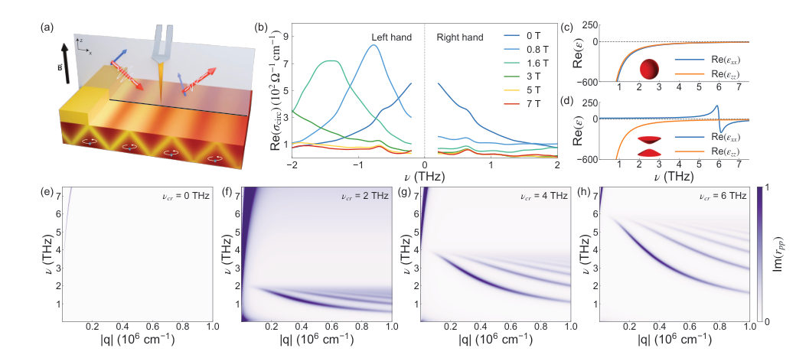
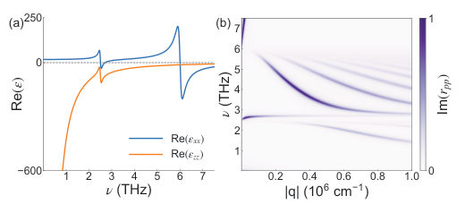
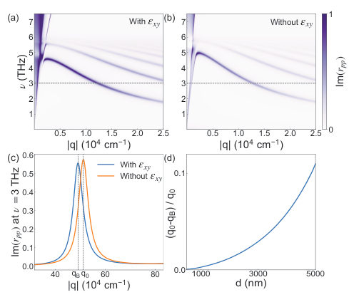
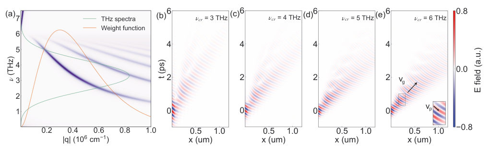
Summary. The paper introduces a new class of hyperbolic polaritons that are tunable via an external magnetic field rather than fixed crystal structures. By inducing cyclotron motion in high-mobility semimetals, the researchers show that the dielectric anisotropy can be controlled to create programmable nanophotonic devices. This discovery opens new avenues for reconfigurable terahertz-frequency light-matter interfaces.
Why it may be interesting. This work is highly relevant to quantum optics and cavity QED as it proposes a new, dynamically programmable platform for controlling light-matter interactions and exploring strong-coupling regimes in the terahertz range.
Main problem. Traditional hyperbolic polaritons rely on fixed structural or phononic anisotropy, making them difficult to tune. The authors aim to demonstrate a new class of hyperbolic polaritons that can be dynamically tuned via an external magnetic field.
Main result. The study predicts and models magnetic-field-induced hyperbolic polaritons in high-mobility semimetals, where cyclotron motion creates a tunable anisotropic dielectric environment. This provides a platform for magnetically programmable nanophotonics and the study of light-matter coupling.
Method. The authors use a Drude model for low-energy optical conductivity and a dielectric tensor approach to solve Maxwell's equations. They employ the transfer matrix method for reflection coefficients and simulate THz near-field nanoscopy (sSNOM) to visualize wave packets.
Model / system. The physical system consists of high-mobility semimetal thin films, such as Cd3As2, subjected to a perpendicular magnetic field. The model utilizes a 3x3 anisotropic dielectric tensor that includes a Hall component induced by cyclotron resonance.
Key observables. Cyclotron resonance frequency, circularly polarized conductivity, dielectric functions (exx, exz), reflection coefficients (rpp, rps), polariton dispersion, and spacetime maps of wave packets.
Important parameters / regimes. Magnetic field strength (up to 7 T), frequency range (up to 7.5 THz), film thickness (100 nm to 3500 nm), and cyclotron resonance frequency (nu_cr).
Assumptions / limitations. Assumes in-plane isotropy (exx = exyy) and uses the Drude model for the low-energy optical conductivity regime.
Figures summary. Figure 3 shows the simulated dielectric function including phonon coupling and the resulting polariton dispersion. Figure 4 presents the incident THz spectrum and simulated spacetime maps of hyperbolic polariton wave packets at different cyclotron frequencies.
Paper structure. The paper introduces the concept of magnetic-field-tunable polaritons, establishes a theoretical framework using a dielectric tensor, presents numerical simulations of dispersion and spacetime dynamics, and discusses experimental detection via THz-sSNOM and potential applications in nanophotonics.
Hyperbolic polaritons are conventionally associated with structural anisotropy or phononic Reststrahlen bands. Here, we predict a new class of hyperbolic polaritons arising from magnetic-field-induced cyclotron motion of charge carriers. When a perpendicular magnetic field is applied to high-mobility semimetals, the cyclotron response drives the in-plane dielectric function from metallic- to insulating-like below the cyclotron resonance frequency, while the out-of-plane response remains metallic. This anisotropy creates a hyperbolic dielectric environment that supports field-tunable hyperbolic polaritons. We develop a comprehensive theoretical framework incorporating coupling to other collective excitations and show that these modes can be directly visualized in real space via terahertz near-field nanoscopy. Our work identifies cyclotron motion as a new route to hyperbolic polaritons and establishes a versatile platform for magnetically programmable nanophotonics.
Authors: Akash Gupta, Marcin Kisiel, Remy Pawlak, Ernst Meyer
Type: experiment · Category: strongly correlated electrons · PDF: https://arxiv.org/pdf/2605.12101v1
Analysis basis: full PDF text, analyzed in chunks
Topic relevance: non-equilibrium dynamics 2/5
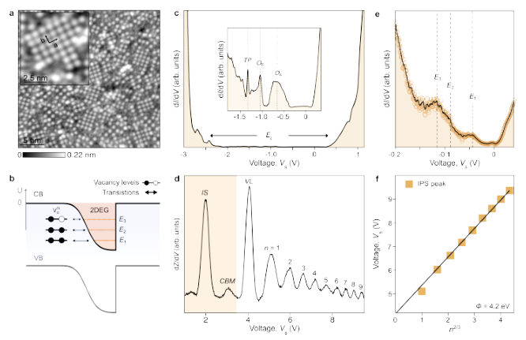
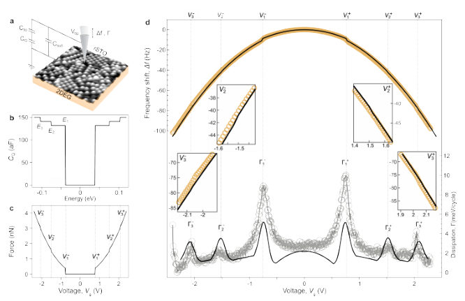
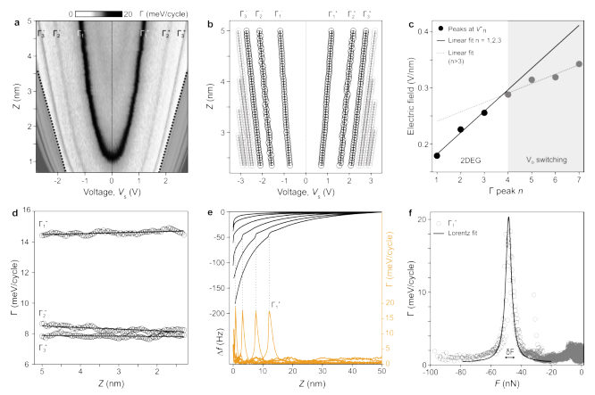
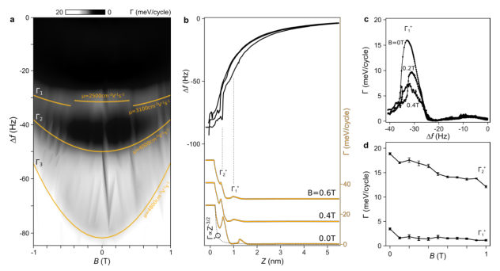
Summary. Researchers used AFM and STM to probe the energy loss mechanisms in the 2DEG of reduced strontium titanate. By analyzing mechanical dissipation and magnetoresistance, they were able to quantify the mobility of individual electronic sub-bands. This provides a new non-invasive way to study charge dynamics in quantum oxides.
Why it may be interesting. The paper explores many-body dynamics, electron-phonon coupling, and spin-dependent scattering in a correlated oxide system, which is relevant to understanding dissipation in open quantum systems.
Main problem. Understanding the dissipation mechanisms and energy losses under field-driven charge fluctuations in the two-dimensional electron gas (2DEG) of reduced strontium titanate.
Main result. The study successfully extracted sub-band mobilities (2500-4800 cm^2/Vs) using Kohler's rule and identified that dissipation peaks are driven by variations in quantum capacitance and charge redistribution.
Method. Combined low-temperature non-contact Atomic Force Microscopy (AFM) and Scanning Tunneling Spectroscopy (STS) with application of external magnetic fields.
Model / system. A two-dimensional electron gas (2DEG) on a reduced SrTiO3(001) surface featuring three sub-bands (one heavy, two light) and oxygen vacancies acting as localized charge sources.
Key observables. Mechanical dissipation (Gamma), frequency shift (Delta f), differential conductance (dI/dV), and voltage-dependent force/capacitance peaks.
Important parameters / regimes. Carrier mobility (mu), effective mass (m*), magnetic field strength (B), and quantum capacitance (CQ).
Assumptions / limitations. Single relaxation time approximation and the weak-magnetic field limit for applying Kohler's rule.
Figures summary. Figure 1 shows the STM overview of the surface, a schematic of electron exchange between vacancies and the 2DEG, and dI/dV point-spectra.
Paper structure. The paper introduces the 2DEG system, describes the combined AFM/STM experimental setup, presents the identification of sub-bands via spectroscopy, analyzes the dissipation mechanism through a capacitance model, and concludes with magnetic field-dependent mobility extraction.
The two-dimensional electron gas (2DEG) in reduced strontium titanate offers a versatile platform for oxide electronics, yet its dissipation mechanisms under field driven charge fluctuations remain poorly understood. Here, we combine low-temperature atomic force microscopy with scanning tunnelling spectroscopy to probe the force and dissipation responses of a mechanical oscillator interacting with the STO 2DEG. The observation of Rydberg like image potential states by tunnelling experiments confirm the 2DEG formation, while dissipation spectroscopy reveals bias-dependent peaks linked to local electrostatic gating and charge redistribution within the 2DEG energy sub-bands. These features are quantitatively explained by variations in quantum capacitance as carrier density is tuned by electric fields. Under magnetic fields, dissipation peaks obey the Kohler's rule, allowing extraction of carrier mobilities in each sub-band. Our results establish a non-invasive AFM - based methodology for quantifying energy losses in quantum oxides, providing new insights into charge dynamics relevant for spintronic applications.
Authors: Mouyang Cheng, Bowen Yu, Chu-Liang Fu, Nina Andrejevic, Matthias T. Agne, Riley Hanus, Qiwei Wan, Nathan C. Drucker, Thanh Nguyen, Andrei Fluerasu, Lutz Wiegart, Xiaoqian M Chen, Daniel Pajerowski, Yongqiang Cheng, Joshua J Turner, G. Jeffrey Snyder, Mingda Li
Type: both · Category: disordered systems and neural networks · PDF: https://arxiv.org/pdf/2605.12194v1
Analysis basis: full PDF text, analyzed in chunks
Topic relevance: non-equilibrium dynamics 2/5
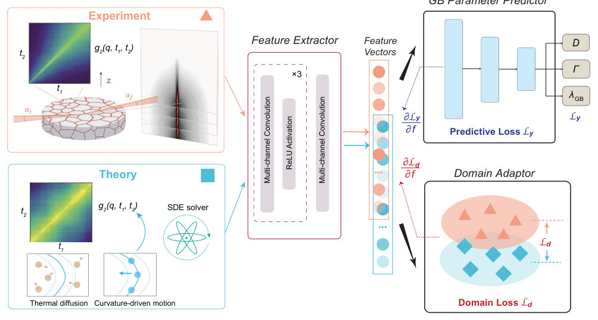
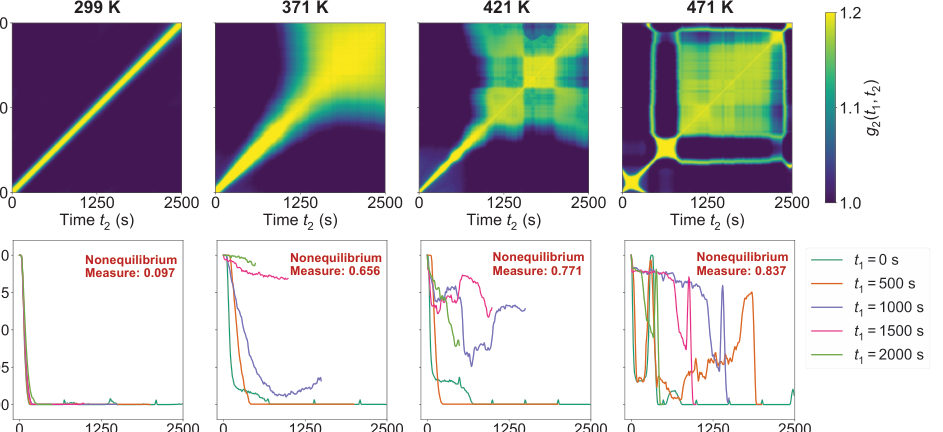
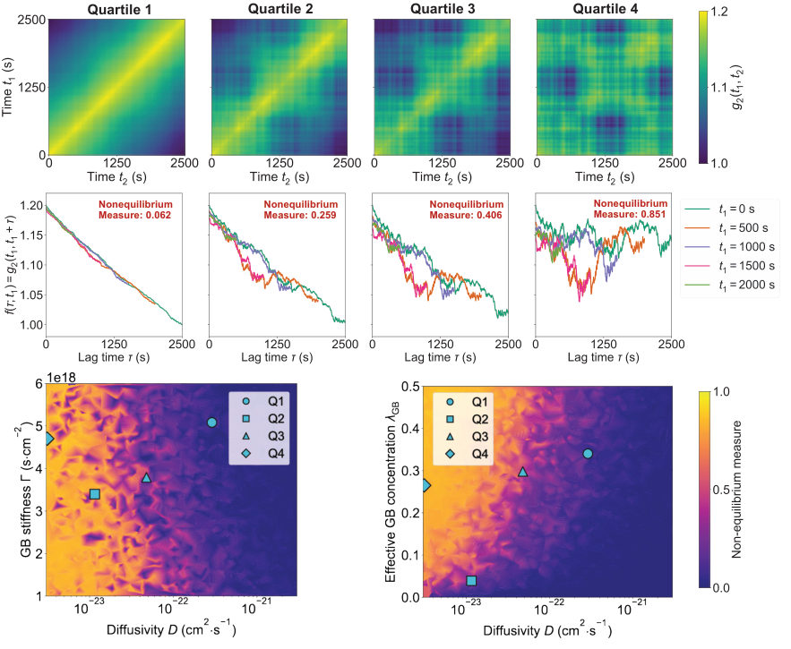
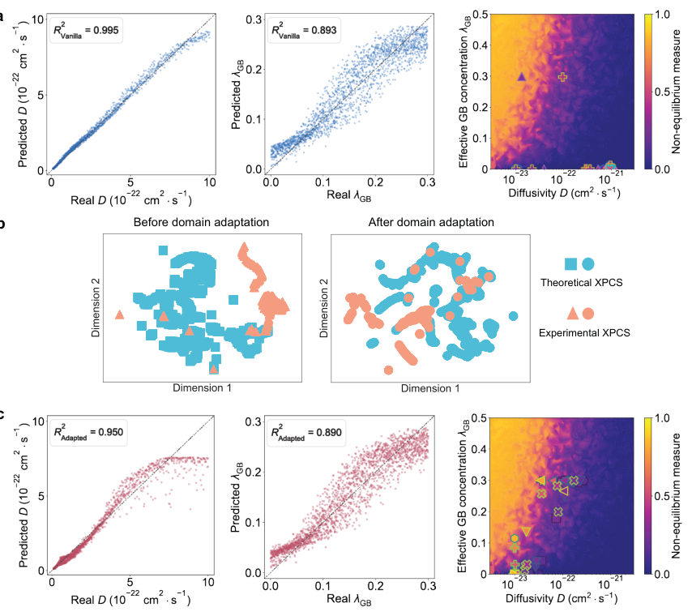
Summary. This paper presents a way to use machine learning to extract physical properties from noisy X-ray scattering data. By aligning simulated models with real experiments, the authors can quantify how grain boundaries move in nanocrystalline silicon even when the system is far from equilibrium.
Why it may be interesting. not directly relevant
Main problem. The difficulty of quantifying slow, non-equilibrium grain-boundary dynamics in nanocrystalline materials and bridging the 'domain gap' between noisy experimental X-ray photon correlation spectroscopy (XPCS) data and idealized theoretical simulations.
Main result. The development of a semi-supervised, domain-adaptive machine learning framework that successfully transfers physical parameter labels from simulations to experimental data, enabling the extraction of kinetic parameters like bulk diffusivity and grain-boundary stiffness.
Method. A combination of experimental XPCS in a GISAXS geometry and a machine learning framework using a convolutional feature extractor, a domain adaptor (using CORAL loss), and a regression loss applied to SDE-based simulations.
Model / system. The physical system is nanocrystalline silicon. The theoretical model is a coarse-grained continuum model using a Stochastic Differential Equation (SDE) to describe interfacial height dynamics driven by curvature and thermal fluctuations.
Key observables. Two-time intensity-intensity correlation maps (g2(q, t1, t2)) and a non-equilibrium metric (S_noneq) measuring the breakdown of time-translation invariance.
Important parameters / regimes. Bulk diffusivity (D), grain-boundary stiffness (Gamma), and effective grain-boundary concentration (lambda_GB).
Assumptions / limitations. The model assumes a coarse-grained continuum limit, that atoms away from the grain boundary are in equilibrium, and that the grain boundary morphology varies only along one direction.
Figures summary. Fig 1 shows the integrated workflow of experiment, simulation, and AI; Fig 2 displays experimental correlation maps showing increasing non-equilibrium features with temperature; Fig 3 shows the parameter interplay and crossover regimes; Fig 4 demonstrates the failure of vanilla ML versus the success of the domain-adaptive approach via UMAP visualization.
Paper structure. The paper introduces the problem of quantifying GB dynamics, presents the integrated experimental/simulation/ML workflow, details the domain-adaptive architecture, validates the method using temperature-dependent silicon data, and discusses the limitations of the continuum model.
Grain-boundary (GB) dynamics control the stability, mechanical, and functional response of nanocrystalline materials, but direct experimental access to their slow non-equilibrium motion has been limited. Here we establish X-ray photon correlation spectroscopy (XPCS), combined with domain-adaptive machine learning, as a quantitative probe of GB dynamics. Temperature- and grain-size-dependent two-time XPCS measurements in nanocrystalline silicon reveal pronounced departures from time-translation invariance, showing that GB relaxation can remain far from equilibrium over experimental timescales. However, direct extraction of quantitative physical information from these high-dimensional, noisy fluctuation maps faces a significant challenge. To overcome this barrier, we develop a semi-supervised learning framework that transfers physical parameter labels from continuum simulations to unlabeled experimental XPCS maps through domain-adaptive representation alignment. This AI-augmented approach enables the extraction of key kinetic parameters, including bulk diffusivity, GB stiffness, and effective GB concentration, directly from experimental XPCS measurements. Our results show how machine learning can transform indirect fluctuation signals into quantitative materials dynamics, providing a general route to study non-equilibrium defect motion in solids.
Authors: Huanjing Gong, Min-Ye Zhang, Peize Lin, Bohan Jia, Ziqing Guan, Lixin He, Xinguo Ren
Type: theory · Category: numerical methods · PDF: https://arxiv.org/pdf/2605.11512v1
Analysis basis: full PDF text, analyzed in chunks
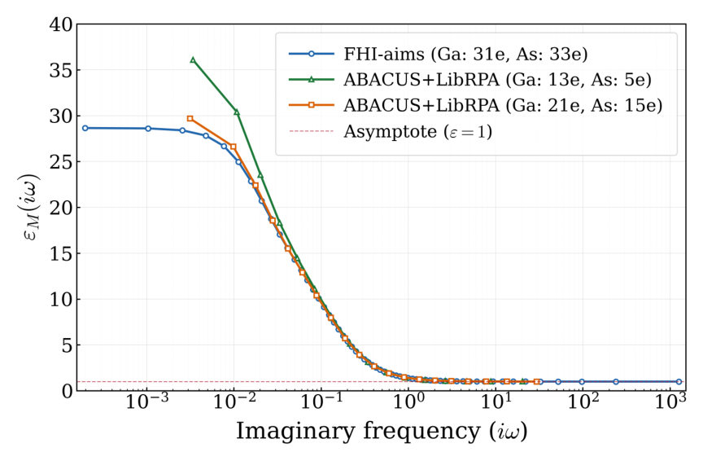

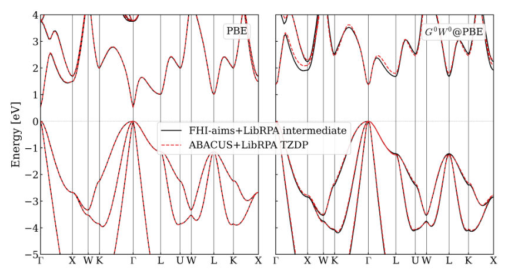
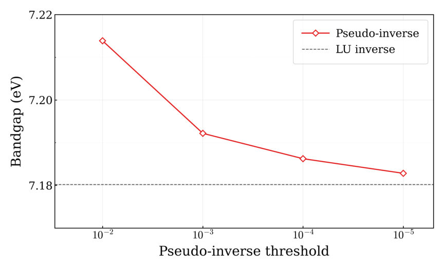
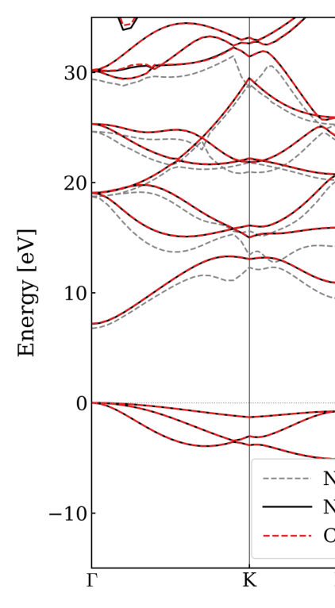
Summary. This paper presents a new, efficient computational framework for performing G0W0 calculations using numerical atomic orbitals and pseudopotentials. By introducing a novel compression scheme and optimized integration techniques, the authors enable large-scale, accurate many-body perturbation theory simulations for periodic systems.
Why it may be interesting. not directly relevant
Main problem. The lack of an efficient, periodic G0W0 implementation within the Numerical Atomic Orbital (NAO) and pseudopotential (PP) framework, which is necessary for large-scale electronic structure calculations and machine-learning approaches.
Main result. The development of the ABACUS+LibRPA framework, which uses a novel LRI compression scheme and analytic q-point treatment to achieve high accuracy and significant computational efficiency gains, comparable to all-electron and plane-wave methods.
Method. A space-time G0W0 algorithm using the Localized Resolution of Identity (LRI) technique, a novel compression scheme for auxiliary basis functions, and an analytic treatment of the small-q limit of the dielectric function.
Model / system. Periodic crystalline solids (semiconductors and insulators like Si, GaAs, MgO, etc.) treated within the G0W0 approximation of many-body perturbation theory using a pseudopotential and NAO basis set.
Key observables. Quasiparticle energies, electronic band structures, band gaps, and the macroscopic dielectric function.
Important parameters / regimes. k-point and q-point sampling density, NAO cutoff radius, auxiliary basis function (ABF) size, and minimax integration grid points.
Assumptions / limitations. The use of the frozen-core approximation and the reliance on the accuracy of the underlying KS-DFT pseudopotentials.
Figures summary. Figure 1 compares the macroscopic dielectric constant of GaAs across different pseudopotentials; Figure 2 shows GaAs quasiparticle band structures; Figure 7 displays convergence tests for Silicon; Figure 8 shows band structures for various semiconductors; Figure 9 shows GaAs with spin-orbit coupling; Figure 10/11 evaluate LRI errors and pseudopotential sensitivity in MgO and GaAs.
Paper structure. The paper introduces the scientific need, details the mathematical derivation of the G0W0 framework in the NAO-PP representation, describes specific algorithmic optimizations (LRI compression, q-point treatment, SOC), presents benchmarks against VASP and FHI-aims, and concludes with a discussion on pseudopotential selection strategies.
The $GW$ method delivers substantially improved accuracy in electronic band structure calculations over conventional Kohn-Sham density functional theory (KS-DFT) by explicitly incorporating the electron self-energy effect beyond mean-field approximations. Despite many existing implementations, a periodic $GW$ implementation within the framework of numerical atomic orbitals (NAO) combined with the pseudopotential (PP) scheme has not been reported. This is urgently needed given the increasing popularity of the NAO-PP framework in KS-DFT calculations and its importance for the development of machine-learning electronic-structure approaches. In this work, we present an efficient NAO-PP-based $G^0W^0$ computational framework by interfacing the first-principles software package ABACUS with LibRPA -- a library for performing low-scaling random-phase approximation and $GW$ calculations based on NAOs. Our approach employs the localized resolution of identity (LRI) technique with a novel compression scheme, significantly improving both computational efficiency and numerical stability. In addition, an analytic treatment of the small-q limit of the microscopic dielectric function reduces the need for dense q-point sampling. Furthermore, we propose a practical strategy to select a suitable KS-DFT pseudopotential prior to $G^0W^0$ calculations by examining the frequency-dependent macroscopic dielectric function. Systematic benchmarks validate the effectiveness of our compression scheme and real-space tensor filtering strategies, demonstrating both high accuracy and significant computational efficiency gains. Comparisons with established $G^0W^0$ implementations show excellent agreement in band structures and band gaps, confirming ABACUS+LibRPA as a reliable and efficient platform for large-scale $G^0W^0$ simulations.
Authors: Hadi H. Hassan, Santiago J. Carreira, M. Cabero, F. Martinet, Alexander Buzdin, Jacobo Santamaria, Javier E. Villegas
Type: experiment · Category: strongly correlated electrons · PDF: https://arxiv.org/pdf/2605.12381v1
Analysis basis: full PDF text, analyzed in chunks
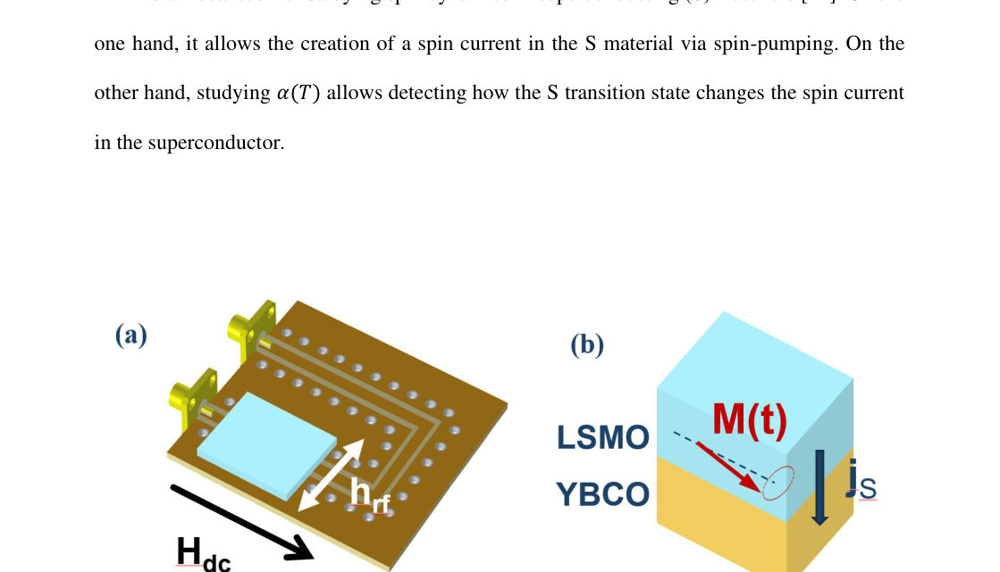
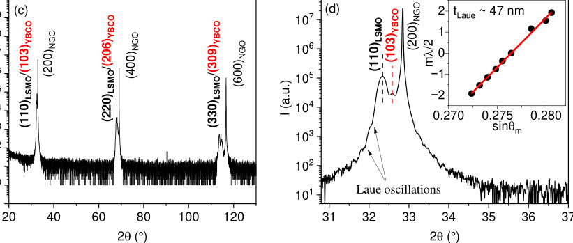
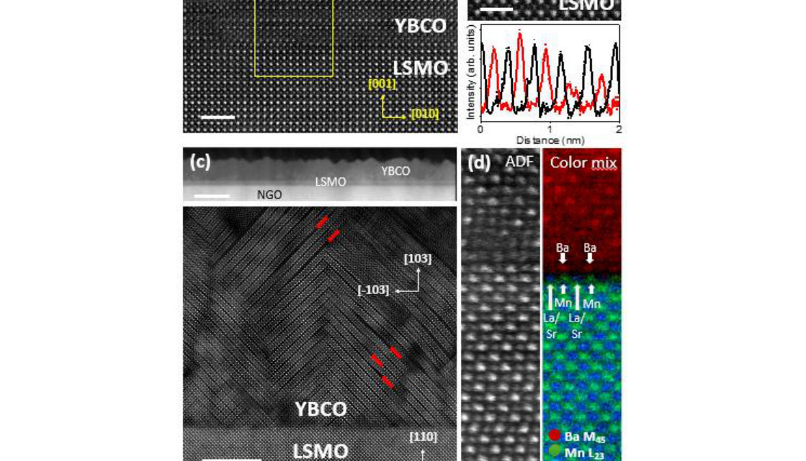
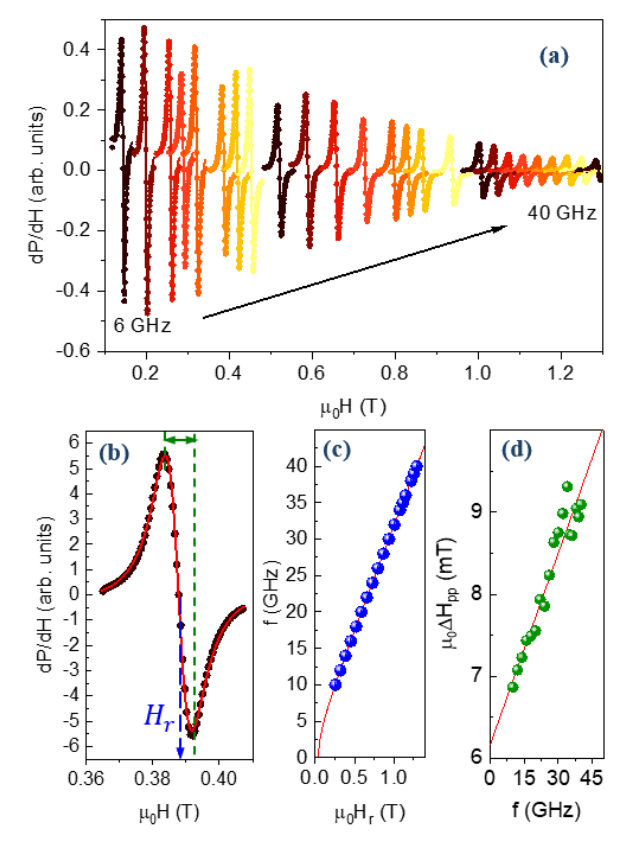
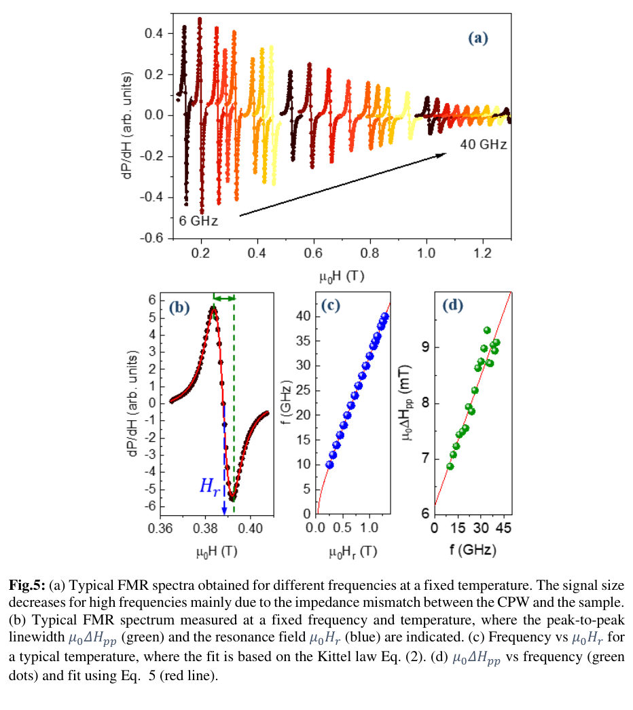
Summary. This paper explores how the orientation of a d-wave superconductor interface affects spin transport from a half-metallic ferromagnet. It reveals that while one orientation allows transport via nodal quasiparticles, the other creates interface-bound Andreev states that cause an unexpected increase in magnetic damping below the superconducting transition.
Why it may be interesting. not directly relevant
Main problem. Investigating the anomalous temperature-dependent spin-pumping behavior and spin-transport mechanisms in heterostructures composed of a d-wave superconductor and a half-metallic ferromagnet.
Main result. The study finds that crystalline orientation dictates the spin-sinking mechanism: (103) heterostructures show damping increases due to nodal quasiparticles, while c-axis heterostructures exhibit an anomalous damping peak due to interface-bound Andreev states.
Method. Broadband ferromagnetic resonance (FMR) was used to measure the temperature-dependent Gilbert damping coefficient in epitaxial YBCO/LSMO bilayers.
Model / system. Epitaxial bilayers of the d-wave superconductor YBa2Cu3O7-d (YBCO) and the half-metallic ferromagnet La0.7Sr0.3MnO3 (LSMO) grown on NdGaO3 substrates in both c-axis and (103) orientations.
Key observables. Gilbert damping coefficient (alpha), FMR linewidth, magnetization (M), and superconducting transition temperature (Tc).
Important parameters / regimes. Temperature relative to Tc, crystalline orientation (c-axis vs 103), and the presence of nodal vs thermal quasiparticles.
Assumptions / limitations. The behavior is driven by the proximity effect and the specific geometry of the d-wave superconducting gap at the interface.
Figures summary. Figure 1 includes a schematic of the coplanar waveguide setup and a diagram of the LSMO/YBCO bilayer illustrating magnetization precession and spin pumping.
Paper structure. The paper introduces the problem of spin-pumping in d-wave/half-metal interfaces, describes the epitaxial growth and structural characterization of the heterostructures, presents FMR results showing orientation-dependent damping, and concludes with a physical interpretation based on quasiparticle and Andreev state dynamics.
Spin-pumping experiments in superconductor/ferromagnet heterostructures, which probe spin-sinking by the superconductor, have revealed a variety of complex behaviors. Most studies have focused on conventional s-wave superconductors combined with metallic or insulating ferromagnets. Here, we study a d-wave superconductor paired with a half-metallic ferromagnet, in epitaxial YBa2Cu3O7-d/La0.7Sr0.3MnO3 heterostructures with two crystalline orientations: one in which YBCO is c-axis oriented, and the other in which YBCO grows along the (103) direction. Using ferromagnetic resonance (FMR), we probe the temperature-dependent Gilbert damping coefficient α. For (103) heterostructures, α(T) initially decreases below Tc, but then increases at lower temperatures, exceeding normal-state levels. This behavior can be understood in terms of the opening of the superconducting gap and spin transport via nodal quasiparticles, which dominate when the ab-plane of YBCO is exposed at the interface. In stark contrast, c-axis heterostructures exhibit a pronounced enhancement of α(T) below Tc, peaking at 0.65-0.7Tc before decaying. This anomaly suggests the dominance of interface-bound Andreev states, arising from a locally suppressed superconducting order parameter due to proximity effects with the half-metallic LSMO.
Authors: Rachel Steinitz-Eliyahu, Galit Cohen, Guy Vosco, E. K. U. Gross, Ryan Requist, Sivan Refaely-Abramson
Type: theory · Category: other · PDF: https://arxiv.org/pdf/2605.11094v1
Analysis basis: full PDF text, analyzed in chunks
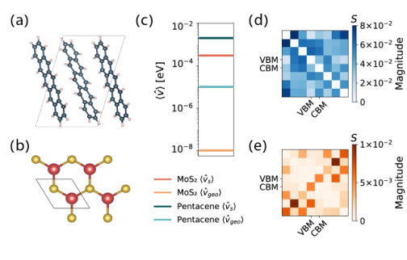
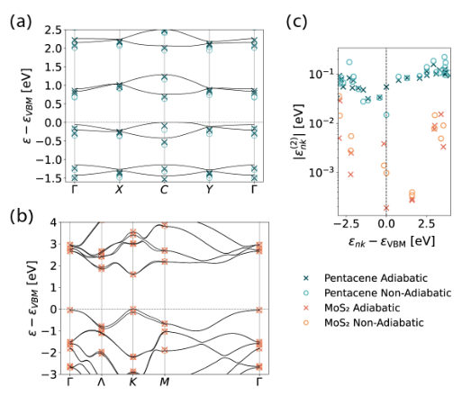


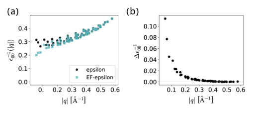
Summary. This paper introduces a new perturbative method, EF-DFPT, to calculate non-adiabatic corrections to the electronic properties of solids. It shows that while these corrections are negligible in many materials, they are crucial for describing the enhanced dielectric screening in soft organic crystals like pentacene.
Why it may be interesting. not directly relevant
Main problem. The failure of the Born-Oppenheimer approximation to capture non-adiabatic effects arising from electron-phonon interactions in extended periodic materials.
Main result. The study demonstrates that non-adiabatic effects are negligible in stiff-mode systems like monolayer MoS2 but lead to significant long-range screening enhancement in soft-mode systems like pentacene crystals.
Method. The implementation of the Exact Factorization Density-Functional Perturbation Theory (EF-DFPT), a perturbative scheme that computes non-adiabatic corrections to Kohn-Sham electronic states up to second order in nuclear displacements.
Model / system. The study applies the EF-DFPT framework to two contrasting periodic systems: the pentacene molecular crystal (a soft-mode system with strong electron-phonon coupling) and monolayer MoS2 (a stiff-mode transition metal dichalcogenide).
Key observables. Static dielectric response (inverse dielectric function), electronic bandstructure energies, and wavefunction overlap matrix elements.
Important parameters / regimes. Soft-mode vs. stiff-mode regimes, zero-temperature limit (zero-point motion), and long-range interaction regime (small q).
Assumptions / limitations. The implementation uses the harmonic limit for nuclear motion and the rigid-ion approximation for computing energy corrections.
Figures summary. Figure 1 shows crystal structures, adiabatic vs. non-adiabatic potentials, and wavefunction overlap; Figure 2 displays renormalized bandstructures and energy corrections; Figure 3 compares the inverse dielectric function for pentacene.
Paper structure. The paper progresses from the theoretical derivation of the EF-DFPT framework to its first implementation in periodic solids, followed by comparative applications to pentacene and MoS2 to demonstrate material-dependent non-adiabatic effects.
Non-adiabatic effects arising from electron-phonon interactions are often neglected within the Born-Oppenheimer (BO) approximation, which assumes that electronic states adjust instantaneously to nuclear motion. The exact factorization (EF) formalism provides a rigorous framework for treating such effects beyond the adiabatic regime and has recently been adapted to density functional theory (DFT) in the harmonic limit. Building on these foundations, we previously introduced an EF-based perturbative scheme, the EF density-functional perturbation theory (EF-DFPT), that enables the computation of phonon-driven non-adiabatic (NA) corrections to Kohn-Sham (KS) electronic states, up to second order in nuclear displacements. Here, we present the first implementation and application of EF-DFPT to extended periodic materials, focusing on its impact on experimentally relevant observables. Using the pentacene molecular crystal and monolayer MoS2 as representative soft- and stiff-mode systems, respectively, we demonstrate how NA electron-phonon interactions modify the static dielectric response. We show that these modifications originate from the combined effect of NA phonon-dressed electronic wavefunctions and second-order NA energy renormalizations. The resulting behavior is strongly material dependent: NA effects are negligible in monolayer MoS2, whereas in pentacene they lead to pronounced long-range screening effects associated with soft vibrational modes and enhanced electron-phonon coupling.
Authors: Haiyue Huang, Prineha Narang, Ioannis Petrides
Type: theory · Category: other · PDF: https://arxiv.org/pdf/2605.11164v1
Analysis basis: full PDF text, analyzed in chunks
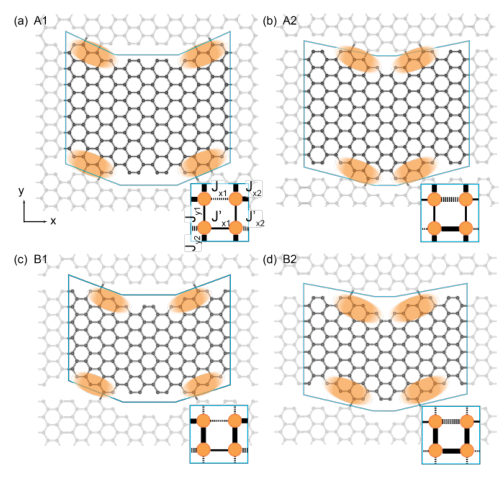
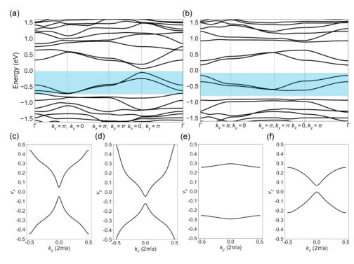
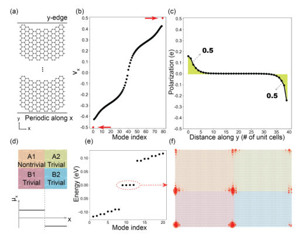
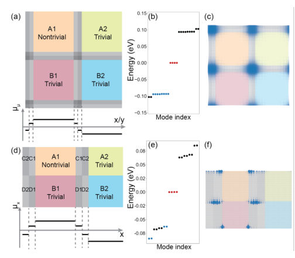
Summary. This paper provides a practical framework for creating quadrupole insulators by engineering the edges of 2D graphitic structures. It reveals that the smoothness of domain walls can be used to control the presence of both massless and massive localized corner states. This work offers a way to realize and manipulate second-order topological phases in experimentally accessible carbon-based platforms.
Why it may be interesting. not directly relevant
Main problem. The difficulty in realizing and controlling second-order topological insulators (SOTIs), specifically quadrupole insulators, in realistic electronic material platforms and understanding the role of domain wall smoothness.
Main result. The authors present a design principle for quadrupole insulators using 2D graphitic structures and demonstrate that tuning domain wall smoothness allows for the coexistence of massless and massive corner states.
Method. The study employs Density Functional Theory (DFT), tight-binding modeling, Wilson loop/Wannier center analysis, and analytical continuum theory to investigate topological properties.
Model / system. The system consists of 2D graphitic structures engineered via zigzag edges, modeled by an effective tight-binding Hamiltonian based on SSH chains and a p-orbital-based Hamiltonian.
Key observables. Quadrupole topological charge, Wannier-sector polarization, corner state energy (massless vs. massive), and angular momentum of localized states.
Important parameters / regimes. Hopping strengths (intra-cell and inter-cell), domain wall height and spread, and mirror symmetry breaking perturbations.
Assumptions / limitations. The effective model assumes nearest-neighbor hopping between p_z orbitals and focuses on the low-energy physics around the Dirac cone.
Figures summary. Figure 1 shows the four topological classes of graphitic unit cells; subsequent figures illustrate band structures, Wannier bands, and the spatial distribution of corner state wavefunctions.
Paper structure. The paper introduces the topological classes, establishes an effective Hamiltonian, validates the model using DFT, explores domain wall physics, and analyzes the effect of symmetry breaking.
Quadrupole insulators are a class of second-order topological insulators (SOTIs) that host zero-dimensional corner states within a two-dimensional bulk. Despite their unique properties, their realization in electronic systems on realistic material platforms remains rare. In this work, we present a general design principle to obtain quadrupole insulators based on two-dimensional graphitic structures. By engineering the positions and connections of zigzag edges, we identify four topological classes of graphitic structures. We show that topologically protected massless corner state emerge at the intersection of domains belonging to different topological classes. Crucially, by tuning the smoothness of the domain wall, we further demonstrate the appearance of additional massive localized states with non-zero angular momentum. Our results provide a practical framework for realizing experimentally accessible SOTIs and uncover the coexistence of both massless and massive bound states in two dimensions.
Authors: Shojiro Takeyama
Type: experiment · Category: strongly correlated electrons · PDF: https://arxiv.org/pdf/2605.11379v1
Analysis basis: full PDF text, analyzed in chunks
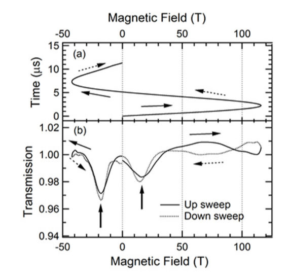
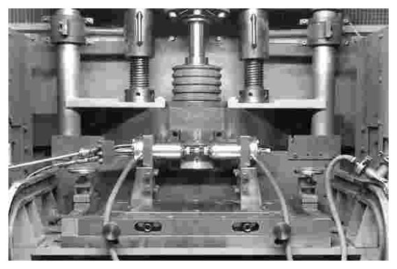
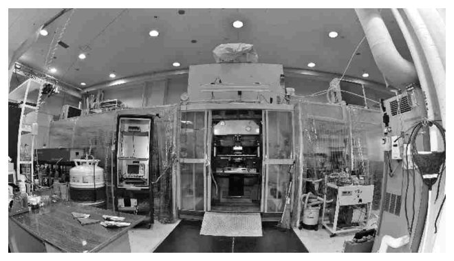
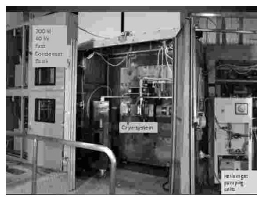
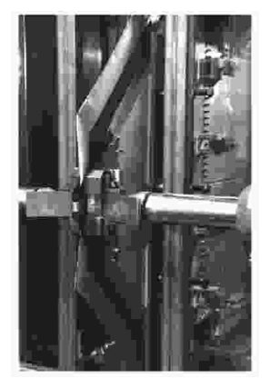
Summary. This review details the recent progress in using megagauss-scale pulsed magnetic fields for precision materials science. It highlights how advancements in flux compression and specialized instrumentation allow researchers to study extreme quantum phenomena, such as phase transitions in correlated systems, despite the destructive nature of the field generation.
Why it may be interesting. not directly relevant
Main problem. The challenge of performing high-precision, reproducible physical measurements in extreme, destructive, and high-noise megagauss magnetic field environments.
Main result. Recent technological breakthroughs in Single-Turn Coil (STC) and Electromagnetic Flux Compression (EMFC) techniques have enabled reliable precision science in the 100 T to 1,200 T regime, revealing phenomena like semiconductor-to-metal transitions in FeSi.
Method. Utilization of pulsed magnetic field generation via STC and EMFC, combined with specialized instrumentation such as RF self-resonant coils, magneto-optics, and miniaturized all-plastic cryostats.
Model / system. Experimental platforms include Single-Turn Coils (100-300 T) and Electromagnetic Flux Compression (up to 1,200 T) applied to systems such as carbon nanotubes, graphene, and strongly correlated materials like FeSi.
Key observables. Magnetization, magneto-transport (conductivity), magneto-optics (cyclotron resonance, absorption), magnetostriction, specific heat, and ultrasound velocity.
Important parameters / regimes. Magnetic field scales of 100 T to 1,200 T; temporal scales of 5-50 microseconds; flux change rates (dB/dt) of 10^8-10^9 T/s; cryogenic temperatures down to 1.6 K.
Assumptions / limitations. The measurements aim for quasi-steady-state or adiabatic conditions during the short-duration pulse; the use of destructive magnets limits the temporal window for observation.
Figures summary. Schematics of the EMFC process, photographs of the copper-lined (CL) coil and primary coil assembly, and plots showing RF-conductivity results for FeSi and initial noise spikes in STC signals.
Paper structure. The review progresses from describing field generation technologies (STC and EMFC) to detailing specialized measurement infrastructures (cryostats and holders), followed by specific scientific applications in condensed matter physics and concluding with future directions.
Ultrastrong magnetic fields, ranging from 100~T to 1,000~T, are generated exclusively by destructive pulsed magnets. While various generation methods exist, this review focuses on the Single-Turn Coil (STC) and Electromagnetic Flux Compression (EMFC) techniques, which provide optimal environments for high-precision measurements in materials science. First, we present recent technological breakthroughs in the EMFC method that have successfully achieved fields exceeding 1,000~T. We then describe specialized measurement infrastructures for magneto-optics, magnetization, and magneto-transport, highlighting the development of miniaturized all-plastic cryostats and custom sample holders designed for the dual extremes of cryogenic temperatures and megagauss fields. Representative physical phenomena revealed through these techniques are discussed, including quantum phase transitions in frustrated magnets, Aharonov--Bohm effects in carbon nanotubes, and semiconductor-to-metal transitions in strongly correlated systems. Furthermore, we address emerging measurement platforms such as magnetostriction, specific heat, and ultrasound velocity. Throughout this review, we emphasize the instrumentation and experimental refinements that ensure reliable data acquisition in the ultrastrong pulsed field regime.
Authors: Brian P. Robinson, Alina Kononov, Lucas J. Stanek, Andrew D. Baczewski, André Schleife, Stephanie B. Hansen
Type: theory · Category: strongly correlated electrons · PDF: https://arxiv.org/pdf/2605.11308v1
Analysis basis: full PDF text, analyzed in chunks
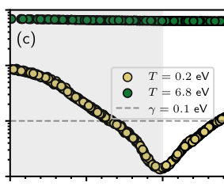
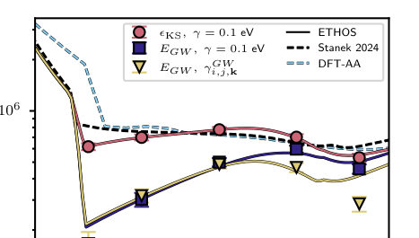
Summary. This paper introduces a many-body GW framework to correct the inaccuracies of standard DFT in predicting the conductivity of warm dense matter. It demonstrates that accounting for electron-electron scattering and quasiparticle energy shifts is crucial for accurately modeling transport in extreme density and temperature regimes.
Why it may be interesting. not directly relevant
Main problem. Standard Density Functional Theory (DFT) fails to accurately predict the electrical conductivity of warm dense matter because it neglects many-body effects, specifically electron-electron scattering lifetimes.
Main result. The GW approximation reveals that energy corrections widen the pseudogap (reducing low-temperature conductivity) and electron-electron scattering increases broadening (reducing high-temperature conductivity), leading to a 2-5x reduction in predicted DC conductivity compared to KS-DFT.
Method. The authors use the GW approximation for electronic self-energy within the Kubo-Greenwood formalism, incorporating both quasiparticle energy shifts and transition-dependent lifetime broadening.
Model / system. The study focuses on liquid beryllium (Be) in the warm dense matter regime at near-solid density (1.97 g/cm3), covering both thermalized and isochorically heated states.
Key observables. DC electrical conductivity, optical conductivity, electronic density of states (DOS), and quasiparticle lifetimes.
Important parameters / regimes. Electronic temperature (0.2 eV to 6.8 eV), mass density (1.97 g/cm3), and the pseudogap width.
Assumptions / limitations. The study uses the G0W0 single-shot approximation and assumes the validity of the Kubo-Greenwood formalism for transport properties.
Figures summary. Figures compare optical and density of states between KS-DFT and GW models, illustrate the temperature dependence of GW broadening, and show the systematic reduction of DC conductivity across various temperature regimes.
Paper structure. The paper introduces the failure of DFT in WDM, presents the GW many-body framework, details the application to beryllium, analyzes low- vs. high-temperature effects, and compares results to existing models like ETHOS.
Conductivity models for warm dense matter inform simulations of planetary structure and fusion experiments. State-of-the-art conductivity calculations based on density functional theory approximate many-body physics and neglect electron-electron scattering lifetimes. We introduce a many-body framework for electrical conductivity using the GW approximation of the electronic self-energy. For beryllium, improved transition energies yield a surprisingly large reduction in low-temperature DC conductivity, while electron-electron scattering primarily reduces high-temperature DC conductivity.
Authors: Aleksandra Deptuch, Mirosława D. Ossowska-Chruściel, Janusz Chruściel, Ewa Juszyńska-Gałązka
Type: both · Category: disordered systems and neural networks · PDF: https://arxiv.org/pdf/2605.12108v1
Analysis basis: full PDF text, analyzed in chunks
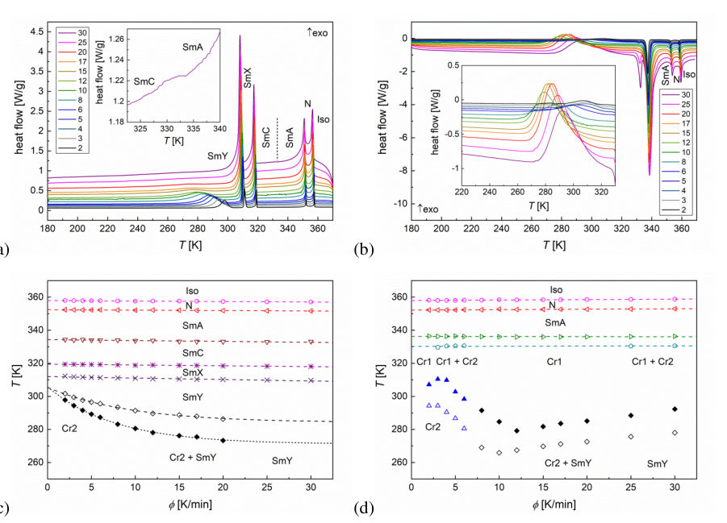
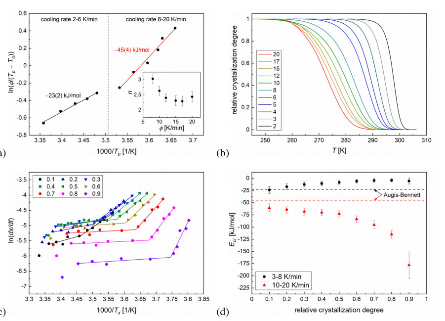
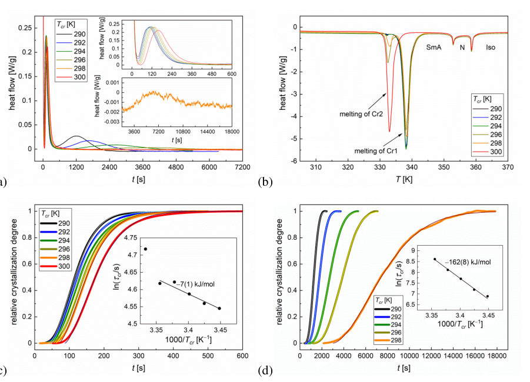
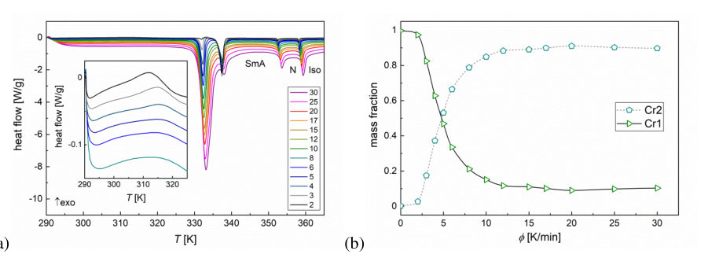
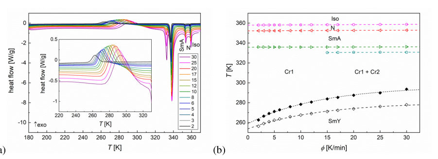
Summary. This paper explores how the thermal history of the liquid crystal 10OS5 controls its transition between glass and various crystal phases. By tuning cooling and heating rates, the energy released during crystallization can be manipulated, suggesting its potential use in thermal energy storage applications.
Why it may be interesting. not directly relevant
Main problem. The study investigates the competing crystallization pathways, kinetics, and molecular origins of relaxation processes in the liquid crystal 10OS5, specifically focusing on the formation of SmY glass and metastable crystal phases.
Main result. The researchers found that the energy released during cold crystallization can be tuned by thermal history and identified that the Cr1 phase acts as a fragile glassformer with a glass transition at 228.0 K.
Method. The study combines experimental techniques like Differential Scanning Calorimetry (DSC) and Broadband Dielectric Spectroscopy (BDS) with computational Density Functional Theory (DFT) to analyze molecular rotations and energy barriers.
Model / system. The physical system is the liquid crystal 10OS5 (4-pentylphenyl-4'-decyloxythiobenzoate), involving various mesophases (SmA, SmC, SmY) and two conformationally disordered crystal phases (Cr1 and Cr2).
Key observables. Crystallization enthalpy (delta H), activation energy (Ea), Avrami exponent (n), dielectric relaxation times, and melting entropy.
Important parameters / regimes. Cooling and heating rates (2 to 30 K/min), glass transition temperature (Tg = 228.0 K), and the fragility index (mf = 153).
Assumptions / limitations. The use of the Avrami model assumes a specific dimensionality of crystal growth, and the VFT equation assumes non-Arrhenius behavior for the alpha-process.
Figures summary. Figure 1 shows DSC thermograms for various cooling/heating rates; Figure 10 shows the optimized 10OS5 molecule with torsional angles; Figure 11 plots conformational energy and dipole moment; Figure 12 shows energy release versus heating rate and temperature.
Paper structure. The paper introduces the material and problem, details the experimental and computational methods, presents the phase sequence and crystallization kinetics, analyzes dielectric relaxation and molecular origins of disorder, and concludes with the potential for thermal energy storage.
The liquid crystalline 4-pentylphenyl-4'-decyloxythiobenzoate is investigated in various temperature programs for determination of crystallization kinetics and glassforming properties. The Avrami model, Augis-Bennett method and isoconversional method are used. Cooling at the 25-30 K/min rate results in formation of the glass of the tilted smectic Y phase with the herring-bone order within layers. Slower cooling leads to the partial or total (2 K/min) crystallization of the metastable Cr2 phase, which during subsequent heating or annealing in a proper temperature transforms to another Cr1 phase. Heating from the vitrified smectic Y leads to cold crystallization of the pure Cr1 phase or the Cr1/Cr2 mix. Both Cr1 and Cr2 are conformationally disordered crystal phases, which is indicated both by the melting entropy values and the dielectric spectra. The results demonstrate that the energy released during cold crystallization can be tuned by thermal history, highlighting 10OS5 as a candidate for thermal energy storage applications.
Authors: Hui Guo, Zhixuan Li, Senhao Lv, Tianqi Gao, Zihao Huang, Kuanrong Hao, Lizhi Zhang, Ke Zhu, Siyu Li, Xianghe Han, Xiao Lin, Shengshan Qin, Wu Zhou, Haitao Yang, Hui Chen, Hong-Jun Gao
Type: both · Category: strongly correlated electrons · PDF: https://arxiv.org/pdf/2605.11395v1
Analysis basis: full PDF text, analyzed in chunks
Summary. This paper identifies PtPb4 as a unique nonsymmorphic superconductor that spontaneously breaks the rotational symmetry of its underlying crystal lattice. The researchers provide direct real-space evidence of elliptical magnetic vortices and robust zero-energy states, positioning this material as a promising platform for Majorana-based topological quantum computing.
Why it may be interesting. not directly relevant
Main problem. The difficulty in experimentally realizing and identifying intrinsic topological superconductivity in bulk crystals, specifically finding platforms that exhibit spontaneous symmetry breaking and robust topological zero modes.
Main result. The discovery of spontaneous rotational symmetry breaking (from C4 to C2) in the superconductor PtPb4, accompanied by the observation of robust, unsplit zero-energy vortex bound states consistent with Majorana physics.
Method. The study combines single-crystal growth via the self-flux method, structural characterization (XRD, STEM, EELS), transport measurements (angle-dependent magnetoresistance), and low-temperature STM/STS spectroscopy, supported by DFT calculations.
Model / system. The physical system is PtPb4, a nonsymmorphic compound with a tetragonal space group (P4/nbm) featuring a frustrated Shastry-Sutherland lattice and nontrivial band topology.
Key observables. Twofold anisotropy in in-plane and c-axis resistivity, anisotropic magnetoresistance (AMR) ratio, elliptical vortex core morphology, and zero-energy vortex bound states in dI/dV spectra.
Important parameters / regimes. Tc approx 2.85 K, superconducting gap approx 0.42 meV, AMR ratio of ~194%, and vortex core anisotropy ratio (xi_a/xi_b) of ~1.8.
Assumptions / limitations. The study assumes the observed symmetry breaking is intrinsic to the superconducting state rather than a structural phase transition, which is verified by STM imaging.
Figures summary. Figure 1 shows the tetragonal structure, XRD, and atomic-resolution STEM/EELS; Figure 2 illustrates twofold symmetric superconductivity via angle-dependent resistivity and polar plots of magnetoresistance; Figure 3 focuses on c-axis resistivity and vortex properties.
Paper structure. The paper begins with structural confirmation of the PtPb4 crystal lattice, moves to transport measurements demonstrating spontaneous rotational symmetry breaking, presents STM/STS evidence of elliptical vortices and zero-energy modes, and concludes with the implications for topological superconductivity.
Topological superconductivity has attracted great interest due to its fundamental significance for realizing Majorana quasiparticles and fault-tolerant quantum computation. Nonsymmorphic superconductors, with symmetry-protected nontrivial electronic structures, offer a promising route to exotic topological superconducting states, yet experimental realizations remain scarce. Here we identify nonsymmorphic compound PtPb4 as a robust platform hosting superconductivity with spontaneous rotational symmetry breaking and nontrivial zero-energy modes. PtPb4 crystallizes in a frustrated Shastry-Sutherland lattice and exhibits nontrivial band topology. By combining in-plane and out-of-plane resistivity measurements, pronounced twofold anisotropy is observed in both the superconducting state and the upper critical field, evidencing spontaneous rotational symmetry breaking. Scanning tunneling microscopy/spectroscopy further reveal twofold-symmetric magnetic vortices, providing direct real-space evidence for the symmetry-broken superconducting state. Notably, a robust zero-energy vortex bound state emerges and persists without spatial splitting over extended distances, consistent with the characteristics expected for Majorana bound state. These findings uncover an exotic superconducting state in PtPb4 and establish a promising platform for exploring topological superconductivity and superconducting quantum devices.
Authors: Jhon Rogelnor A. Florida, Edward Aris D. Fajardo
Type: theory · Category: disordered systems and neural networks · PDF: https://arxiv.org/pdf/2605.12067v1
Analysis basis: full PDF text, analyzed in chunks

Summary. The researchers used a machine learning approach to screen nearly a thousand topological quantum materials for use in magnesium-ion batteries. They successfully identified new oxide-based materials that offer much higher operating voltages than current standards. This work demonstrates how integrating neural networks with density functional theory can accelerate the discovery of next-generation battery components.
Why it may be interesting. not directly relevant
Main problem. Identifying high-performance, high-voltage cathode materials for magnesium-ion batteries (MIBs) to overcome the challenges of slow Mg2+ diffusion and low operating voltages.
Main result. The study identified Mg2VO4 and Mg6MnO8 as promising high-voltage candidates, with predicted average voltages of 3.66 V and 4.06 V, respectively.
Method. A combination of machine learning using a modified crystal graph convolutional neural network (mCGCNN) for high-throughput screening and first-principles DFT calculations (GGA+U) for validation.
Model / system. The physical system consists of magnesium-ion battery cathodes, specifically exploring a class of topological quantum materials (TQMs) such as semimetals and topological insulators.
Key observables. Average intercalation voltage, theoretical capacity (gravimetric and volumetric), formation energy, and electronic band structure.
Important parameters / regimes. Voltage threshold > 3.0 V, volumetric capacity > 800 mAh/cm3, Hubbard U corrections (3.25 eV for V, 5.0 eV for Mn), and energy above hull < 0.1 eV/atom.
Assumptions / limitations. Neglect of pressure-volume and entropic contributions to voltage; assumption that ML models trained on conventional materials generalize to TQMs.
Figures summary. Figure 1 shows the distribution of predicted voltages and a voltage-capacity map highlighting nontrivial materials; Figure 2 displays the crystal structures of the identified candidates; Figure 5 compares predicted electrochemical properties.
Paper structure. The paper introduces the MIB challenge, describes the mCGCNN screening process, presents the results of the TQM screening, details the DFT validation of specific candidates (stability and voltage), analyzes the electronic structure/redox mechanism, and concludes with the potential of TQMs.
Developing high-performance cathode materials for magnesium-ion batteries (MIBs) remains challenging because Mg$^{2+}$ ions move slowly, and conventional materials exhibit low voltage outputs. In this study, machine learning and first-principles calculations were combined to investigate topological quantum materials (TQMs) as a new class of cathode candidates. A modified crystal graph convolutional neural network (mCGCNN) was used to screen 917 Mg-containing TQMs, identifying a small subset of materials with predicted voltages above 3 V and high volumetric capacities. Among these, Mg$_2$VO$_4$ and Mg$_6$MnO$_8$ were selected for detailed density functional theory (DFT) analysis. Formation energy and convex-hull calculations indicate that Mg$_x$VO$_4$ exhibits a fully stable magnesiation pathway, whereas Mg$_x$MnO$_8$ demonstrates minor metastability at intermediate compositions. The calculated voltage profiles yield average voltages of 3.66 V for Mg$_2$VO$_4$ and 4.06 V for Mg$_6$MnO$_8$, in good agreement with machine learning predictions. Electronic structure analysis, supported by Wannier interpolation, confirms that both materials are semiconducting, with valence bands dominated by O $2p$ states and conduction bands by transition-metal $d$ states, indicating a charge-transfer redox mechanism. Compared to conventional Mg cathodes, these TQMs exhibit higher voltages and competitive capacities, underscoring their potential for next-generation multivalent batteries. This study demonstrates that integrating machine learning with first-principles calculations offers an efficient approach for discovering and understanding novel cathode materials.
Authors: Armin Sahinovic, Rossitza Pentcheva
Type: theory · Category: other · PDF: https://arxiv.org/pdf/2605.12256v1
Analysis basis: full PDF text, analyzed in chunks
Summary. This paper demonstrates how sulfur doping can be used to precisely tune the electronic properties of few-layer graphene. By controlling the type of sulfur-vacancy configuration, researchers can transition the material from a metallic state with linear dispersion to an insulating state with flat bands, offering a pathway for designing versatile graphene-based technologies.
Why it may be interesting. not directly relevant
Main problem. The study investigates how sulfur (S) doping on the basal plane of mono-, bi-, and four-layer graphene affects electronic, magnetic, and structural properties.
Main result. S-doping allows for the engineering of band structures, ranging from sustained Dirac cones in thiophenic configurations to the creation of band gaps and flat bands in graphitic configurations.
Method. First-principles Density Functional Theory (DFT) simulations using the VASP package with GGA-PBE functionals and Grimme DFT-D3 van der Waals corrections.
Model / system. The system consists of monolayer, bilayer, and four-layer graphene (FLG) with various sulfur-doped vacancy configurations (e.g., 1V1S, 2V1S, 4V3S) and sulfur adsorption.
Key observables. Band gap, Dirac cone dispersion, flat bands, spin polarization, magnetic moment, vacancy formation energy, and S-binding energy.
Important parameters / regimes. S-doping concentration (2.00% to 6.25%), number of graphene layers, and dopant position (surface vs. subsurface).
Assumptions / limitations. Use of the GGA-PBE functional and the assumption that van der Waals interactions are adequately captured by the DFT-D3 correction.
Figures summary. Figure 1 shows vacancy structures and band structures for single vacancies; Figure 2 illustrates binding energy trends; Figure 6 presents orbital- and layer-resolved band structures and spin density; Figure 7 shows unfolded band structures for multilayer systems.
Paper structure. The paper introduces the motivation (battery/catalysis), details the computational methodology, analyzes the stability and energetics of various S-doped vacancy configurations, explores the electronic band structure modifications across different layer counts, and concludes with the technological implications of band engineering.
Motivated by the technological relevance of S-doped few-layer graphene (FLG) in battery applications and in the oxygen reduction reaction, we systematically explore the effect of basal plane S-doping on the electronic properties of mono-, bi-, and four-layer graphene, using first-principles calculations with van der Waals corrections. In the monolayer we find a variety of effects ranging from a sustained Dirac cone with localized impurity bands away from the Fermi level in thiophenic doping (2V1S) to a band gap opening of 0.4 eV and flat bands close to the Fermi-level in graphitic doping (1V1S) and an additional $n$-type doping together with spin-polarization, when three S-atoms are adsorbed in a four-site vacancy (4V3S). Incorporation in FLG leads to modification of the Dirac cone into a set of hyperbolic touching bands in 2V1S; reduction (bilayer) and closing of the band gap with additional hyperbolic touching bands in conjunction with the flat band at the Fermi level in 1V1S and 4V3S and a reduction of spin polarization in the latter. Overall, S-doping enables design of the band structure and tuning the electronic behavior of FLG from metallic to insulating and from linear dispersive to flat bands that makes S-doped FLG a promising material for versatile technological applications.
Authors: Thomas Butruille, Joshua C. Crone, Carlos M. Portela
Type: both · Category: other · PDF: https://arxiv.org/pdf/2605.12093v1
Analysis basis: full PDF text, analyzed in chunks
Summary. This paper demonstrates that 3D-printed multilayered 'heterostructures'—alternating between solid and lattice architectures—provide significantly better protection against high-velocity impacts than single-material designs. By using a combination of experimental particle impact testing and numerical modeling, the authors show that these layers can be programmed to recruit more material into the impact zone to dissipate energy. This approach offers a scalable framework for designing advanced protective equipment like Whipple shields or sports gear.
Why it may be interesting. not directly relevant
Main problem. Developing lightweight, high-efficiency 3D-architected materials for extreme impact mitigation by moving beyond single-architecture designs toward functional grading and layering.
Main result. Heterostructured shields consisting of alternating monolithic and lattice layers outperform single-architecture lattices by over 50% in mass-normalized energy dissipation due to enhanced mass recruitment and crack-pinning.
Method. The study uses Laser-Induced Particle Impact Testing (LIPIT) with supersonic microparticles, X-ray Computed Tomography (XCT) for crater reconstruction, and finite element simulations combined with analytical wave-propagation modeling.
Model / system. The physical system consists of 3D-printed micro-scale heterostructures made of IP-Dip photoresist, featuring alternating layers of octet-truss lattices and monolithic (solid) polymer plates.
Key observables. Energy dissipation (mass-normalized), crater morphology (volume, area, radius), particle velocity (initial and final), and lateral stress-wave propagation.
Important parameters / regimes. Supersonic impact velocities (250-900 m/s), high strain rates (10^5 to 10^7 s^-1), relative density (approx. 33%), and micro-scale unit cell dimensions (approx. 6.7 micrometers).
Assumptions / limitations. Assumes plastic incompressibility for monolithic layers, affine compressibility for octet lattices, and that the arrival of a plastic stress wave correlates directly with crater boundaries.
Figures summary. Figure 1 shows the design framework and experimental setup; Figure 2 compares impact events and architectures; Figure 3 presents energy dissipation metrics; Figure 4 shows XCT crater profiles; Figure 6 and 7 illustrate lateral stress-wave propagation and crater boundaries.
Paper structure. The paper introduces the design paradigm of heterostructures, describes the LIPIT experimental platform and fabrication, presents results on energy dissipation and mass recruitment, analyzes stress-wave propagation through analytical and simulation methods, and validates wave speeds using uniaxial compression data.
Materials designed by nature commonly exhibit functional grading and laminated structures, particularly when intended for enhanced impact protection. Synthetic materials have also found success in exploiting this concept with fully dense but spatially varying architectures, as is the case with advanced fiber-based composites. In the lightweight materials space, porous architected materials have shown benefits for extreme impact mitigation, proving to be advantageous in dissipating large amounts of energy per unit mass, but rarely harness the benefits of layering or functional grading in designs. Here, a design paradigm for lightweight multilayered materials towards high impact-mitigation efficacy is demonstrated, showing that the use of alternating monolithic and beam-based architectures leads to enhanced and predictable responses under extreme conditions. These layered, mass-equivalent `heterostructures' with different ordering and proportions of octet and monolithic layers outperform single-architecture lattices on a mass-normalized energy dissipation basis by >50% when subjected to supersonic microparticle impact. Through analysis that combines wave-propagation analysis, nonlinear finite element simulations, and post-impact crater reconstruction, layer-by-layer mechanical properties are mapped to crater formation and energy dissipation behaviors. This heterostructure design framework offers a simple approach towards tuning failure and impact resistance of materials for protective applications from Whipple shields to sports equipment.
Authors: Awais Sarwar, Louis Conrad Winkler, Anncharlott Kusber, Fred Kretschmer, Karl Leo, Hans Kleemann, Johannes Benduhn
Type: experiment · Category: other · PDF: https://arxiv.org/pdf/2605.11923v1
Analysis basis: full PDF text, analyzed in chunks
Summary. This paper demonstrates a method to significantly enhance the sensitivity of organic photodetectors by combining interface engineering with precise molecular trap engineering. By using a very low concentration of m-MTDATA, the researchers achieved massive photon-to-electron conversion efficiency without the typical increase in noise. This approach provides a scalable pathway for developing ultra-sensitive light detectors for weak-light applications.
Why it may be interesting. not directly relevant
Main problem. The fundamental gain-bandwidth trade-off in photomultiplication-type organic photodetectors (PM-OPDs), where high external quantum efficiency (EQE) typically leads to high dark current and slow response times.
Main result. By integrating hole-blocking layers with low-concentration (0.5 wt%) m-MTDATA molecular traps, the researchers achieved a peak EQE exceeding 1100% and a specific detectivity of 4x10^12 Jones, effectively decoupling gain from dark current.
Method. The study uses physical vapor deposition (PVD) to precisely engineer a bulk heterojunction active layer with discrete hole-trapping sites and employs ultra-sensitive EQE, noise spectroscopy, and temperature-dependent admittance spectroscopy.
Model / system. A fully vacuum-deposited organic photodetector architecture featuring a BDP-OMe:C60 bulk heterojunction active layer, doped with 0.5 wt% m-MTDATA, and utilizing HAT(CN)6 and C60 as hole-blocking layers.
Key observables. External Quantum Efficiency (EQE), specific detectivity (D*), cutoff frequency (f-3dB), dark current density (Jd), and charge-transfer (CT) state energies.
Important parameters / regimes. m-MTDATA concentration (0.1 to 1.0 wt%), reverse bias voltage (-2 V to -4 V), and CT-state reorganization energy.
Assumptions / limitations. The effectiveness of the trap engineering relies on the traps remaining electrically isolated and not forming a continuous percolation pathway for leakage current.
Figures summary. Figure 1 shows the device architecture and layer stack; Figure 3 illustrates the frequency response and bandwidth; Figure S2 compares EQE spectra; Figure S3 plots detectivity vs. bias; Figure S4 shows a calibration curve for trap concentration.
Paper structure. The paper introduces the PM-OPD trade-off, describes the PVD fabrication and device architecture, presents the results of trap engineering and interface engineering synergy, analyzes the mechanism via CT-state spectroscopy, and concludes with the design rule for maximizing isolated traps.
Photomultiplication-type organic photodetectors (PM-OPDs) promise exceptional sensitivity for weak-light detection but typically suffer from a gain-bandwidth trade-off where high external quantum efficiency (EQE) incurs large dark current and slow response times. Here, we demonstrate a fully vacuum-deposited PM-OPD architecture that mitigates these limitations by integrating hole-blocking layers low-stoichiometry molecular trap engineering. We isolate discrete trapping sites that maximize positive space-charge accumulation by introducing m-MTDATA as a dedicated hole-trapping site at a low concentration (0.5 wt\%) into a BDP-OMe:C60 bulk heterojunction. This engineered charge confinement triggers efficient field-assisted electron injection from the anode while remaining strictly below the threshold for localized percolation, effectively decoupling the photocurrent multiplication mechanism from trap-mediated dark current shunts. Consequently, the optimized device achieves a peak EQE exceeding 1100% at a reverse bias of -4 V. The optimized device exhibits a specific detectivity of 4x10^{12} Jones under -2 V reverse bias along with a cutoff frequency (f-3dB) of 22 kHz.
Authors: Rasoul Ghadimi, Chiranjit Mondal, Bohm-Jung Yang
Type: theory · Category: strongly correlated electrons · PDF: https://arxiv.org/pdf/2605.11587v1
Analysis basis: full PDF text, analyzed in chunks
Summary. This paper shows how superconductivity in honeycomb lattices can create exotic topological phases known as Euler and valley-Euler superconductors. It reveals that these phases can host protected edge modes and exhibit non-Abelian braiding of Dirac nodes in momentum space. This provides a new route to realizing complex topological physics in Dirac materials.
Why it may be interesting. not directly relevant
Main problem. The study investigates the realization of nontrivial Euler band topology through superconducting electronic instabilities in Dirac materials, specifically honeycomb lattices.
Main result. The authors demonstrate that f-wave spin-triplet pairing leads to an Euler superconductor with non-Abelian braiding of Dirac nodes, while s-wave spin-singlet pairing results in a valley-Euler superconductor; both host mirror-symmetry-protected helical domain-wall modes.
Method. The researchers use a Bogoliubov-de Gennes (BdG) framework to calculate topological invariants, specifically the Euler class and patch Euler class, and perform numerical real-space solutions of the BdG equation.
Model / system. The system consists of monolayer honeycomb lattices (like graphene) with space-time inversion symmetry, modeled using a tight-binding Hamiltonian with nearest and next-nearest neighbor hopping and superconducting pairing potentials (SWSS and FWST).
Key observables. Euler class (chi), patch Euler class, energy dispersion, helical domain-wall modes, and Dirac node braiding.
Important parameters / regimes. Chemical potential (mu), hopping amplitudes (t1, t2), anisotropy parameter (alpha), and pairing symmetries (s-wave spin-singlet and f-wave spin-triplet).
Assumptions / limitations. The analysis assumes the presence of space-time inversion (IST) symmetry and focuses on the regime of superconducting electronic instabilities.
Figures summary. Fig 1 shows the lattice structure, energy dispersion, and pairing potential distribution; Fig 2 illustrates the domain-wall setup and the energy spectra of helical modes; Fig 3 demonstrates the mechanism of Dirac node annihilation in the SWSS phase.
Paper structure. The paper introduces the physical system and symmetry, defines the superconducting models (SWSS and FWST), calculates topological invariants (Euler class), analyzes domain-wall modes, and explores the non-Abelian braiding of Dirac nodes under anisotropy.
Electronic bands in systems with space-time inversion (IST) symmetry can host nontrivial Euler topology. Here, we investigate the band topology of IST-symmetric superconducting honeycomb lattices and demonstrate that s-wave spin-singlet (SWSS) and f-wave spin-triplet (FWST) superconducting pairings give rise to valley-Euler and Euler superconductors, respectively. We find that Euler topology in both pairing states gives rise to mirror-symmetry-protected helical domain-wall modes. Furthermore, we show that Euler topology in the FWST state induces non-Abelian braiding of Dirac nodes in momentum space when anisotropic hopping is introduced. Our work establishes superconducting electronic instabilities as a natural route to realizing nontrivial Euler band topology in Dirac materials.
Authors: Zeyu Wang, Shuya Yamazaki, Martin Hoffmann Petersen, Masato Ohnishi, Tomiya Yamamoto, Wei Nong, Jianghai Wang, Ruiming Zhu, Masatoshi Hanai, Michimasa Morita, Toyotaro Suzumura, Zekun Ren, Junichiro Shiomi, Kedar Hippalgaonkar
Type: theory · Category: disordered systems and neural networks · PDF: https://arxiv.org/pdf/2605.11610v1
Analysis basis: full PDF text, analyzed in chunks
Summary. This paper presents a large-scale benchmark of 15 machine learning models designed to predict the lattice thermal conductivity of inorganic crystals. It identifies that equivariant graph neural networks like ALiEGNN are particularly effective at predicting properties in unseen chemical and structural regimes. This work enables much faster high-throughput screening of potential thermoelectric materials compared to traditional first-principles methods.
Why it may be interesting. not directly relevant
Main problem. The high computational cost of first-principles calculations for predicting lattice thermal conductivity (kappa_lat) prevents large-scale screening of materials for applications like thermoelectrics.
Main result. The ALiEGNN model demonstrates superior robustness and accuracy in out-of-distribution regimes, while MLIP-embedded models excel at interpolation; the study shows that surrogate models can reduce computational costs by orders of magnitude.
Method. A comprehensive benchmark of 15 machine learning surrogate models, including end-to-end deep neural networks, physically-informed descriptors, and MLIP-based embeddings, evaluated across random, space-group disjoint, and out-of-distribution splits.
Model / system. The study focuses on inorganic crystalline materials, specifically using the Phonix database of 6,966 entries, evaluating architectures like ALiEGNN (an E(3)-equivariant GNN) and various MLIP-derived embedding models.
Key observables. Lattice thermal conductivity (kappa_lat) at 300 K, specifically the natural logarithm of kappa_lat.
Important parameters / regimes. Low-thermal-conductivity regime (kappa_lat < 1 W m^-1 K^-1), space-group disjoint splits, and out-of-distribution (OOD) regimes.
Assumptions / limitations. The models assume that structural representations (graphs, embeddings, or descriptors) can sufficiently capture the anharmonic phonon interactions necessary for thermal transport.
Figures summary. Figure 1 shows the distribution of crystal systems and thermal conductivity in the Phonix database; Figure 2 illustrates the dataset splitting strategies; Figure 3 categorizes the 15 surrogate models; Figure 4 compares model performance across different splits; Figure 5 shows the ALiEGNN architecture; Figure 6 details the MACE-based MLP architecture.
Paper structure. Introduction to the challenge of thermal conductivity prediction; presentation of the Phonix database and benchmarking methodology; categorization of surrogate models; performance evaluation across different data splits (interpolation vs. extrapolation); discussion of structural representation expressivity; and conclusion on the trade-off between accuracy and computational efficiency.
The appearance of generative models has opened vast chemical spaces in the design of functional materials. Although machine learning interatomic potentials (MLIPs) have substantially accelerated phonon calculations, high-fidelity prediction of lattice thermal conductivity \k{appa}lat still requires accurate treatment of anharmonic interactions, which remains a key challenge for existing potentials across novel chemical spaces. To address this challenge, we present a comprehensive benchmark of 15 surrogate models for predicting \k{appa}lat using the Phonix database, which contains 6,966 entries with anharmonic phonon properties derived from first-principles calculations. Firstly, We categorize these surrogate models into three distinct groups: Physical-informed feature descriptors combined with ML models, end-to-end deep neural networks, and pre-trained MLIP-embeddings combined with ML models. By evaluating model performance across random, space-group disjoint (testing generalization to unseen crystal symmetries), and Out-Of-Distribution splits (OOD dataset that testing extrapolation to property regimes beyond the training range) based on \k{appa}lat, we probe both interpolation and exploration capabilities. Our results reveal that MLIP-embedded models excel in interpolation within well-sampled regions, deep neural network models especially ALiEGNN demonstrate superior robustness in OOD regimes critical for discovering novel low-\k{appa}lat. Additionally, we find a systematic degradation in performance when the structural representation is reduced. Although surrogate models exhibit lower accuracy than direct simulations using first-principles calculation, they reduce computational costs by orders of magnitude, enabling efficient high-throughput screening of thermoelectric materials with minimal loss in generative design workflows.
← Index · ← Previous · Next →